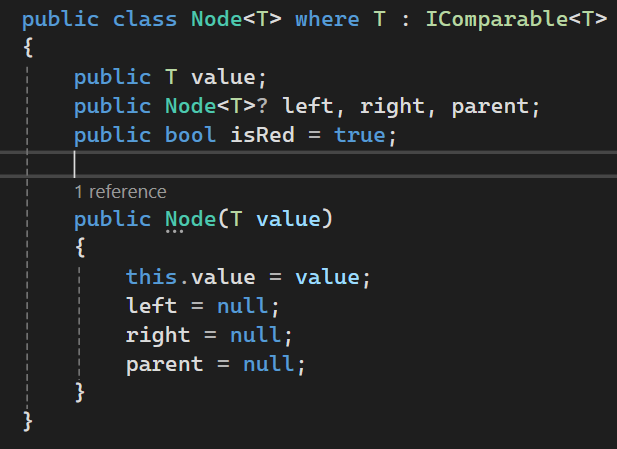

Binary Search Tree Enhancement - DSA Artifact
This artifact is a conversion of the binary search tree in C++ to a red-black-tree in C#. It’s a self-balancing BST that was created in 1972, 10 years after the initial creation of the AVL tree, another type of self-balancing tree. I used this artifact since it requires two large enhancements on top of a language overhaul.
Generics
The first enhancements over the initial C++ implementation is a generic implementation using the IObservable interface. This requires all values to implement the .CompareTo() method for tree traversal but allows a more library or language level implementation of the data structure.
Tree Balancing
The second enhancement had the largest challenges due to the auto-balancing implementation. The rotations were slightly confusing and it took videos and visualization tools to understand transplants for deletions. I ended up changing some minor details, for example I ended up ditching the ref type for simplicity, although in retrospect it seems to operate like a pointer. I also swapped the color enum to a bool since there are only two possible values, red or not red.


Reflection
The enhancements for this project were my favorite. It was my first dive into C# and one of the few times I've worked with generics and interfaces on a meaningful scale. It provided a realistic implementation of what these structures would look like in a library by following strict requirements. Additionally, I learned some places generics could be used in large applications. Generic database operations with model binding and custom interfaces, particularly when it comes to creating factories and other design patterns.